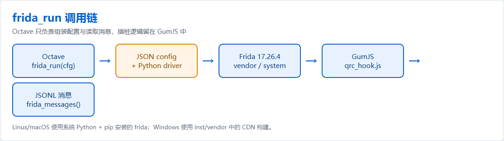
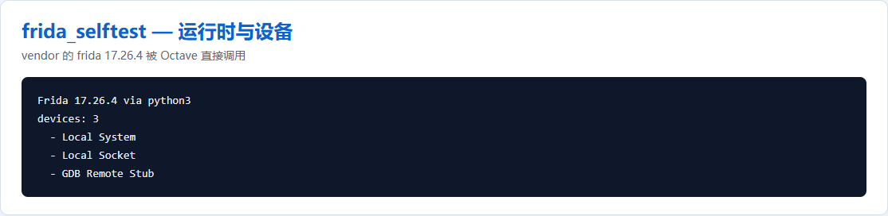
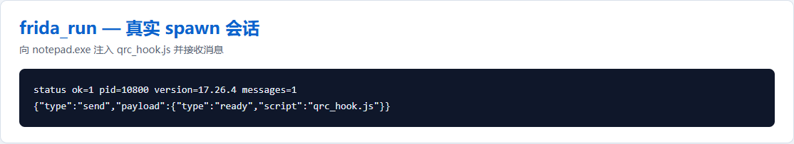
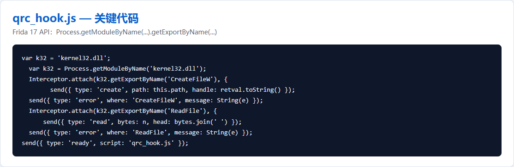

本包可通过 Octave 软件源安装：
>> pkg install -forge octave_frida
>> pkg install 'https://github.com/CNOCTAVE/octave_frida/releases/download/1.0.0/octave_frida.tar.gz'
>> pkg install octave_frida.tar.gz -local
>> pkg load octave_frida
全平台一致：需要一个已安装 frida 的系统 Python（pip install frida）。
若自动探测找不到，可用环境变量 FRIDA_PYTHON 指向已装 frida 的解释器（例如虚拟环境的 python）。
下列每个函数均按「调用方法 → 含义 → 示例」说明。使用前先执行 pkg load octave_frida。带 [ ]
的参数可省略。
调用方法 ctx = frida_init ()
含义 探测一个能 import frida 的系统 Python 解释器（只读系统已安装的库，不注入任何自带运行时），返回上下文结构体 ctx。字段：python（解释器命令）、version（Frida 版本）、driver / devices_driver（Python 脚本路径）。探测顺序：FRIDA_PYTHON → python3 → python → py -3。结果会缓存；找不到可用解释器时报错，提示 pip 安装 frida 或设置 FRIDA_PYTHON。
示例
>> ctx = frida_init() >> ctx.version ans = 17.26.4 >> ctx.python ans = python
调用方法 frida_version ()
含义 打印当前生效的 Frida 版本与所用 Python，无返回值。用于确认系统 frida 库确实被找到。
示例
>> frida_version() Frida 17.26.4 (python: python)
调用方法 devices = frida_devices ()
含义 返回 Frida 设备名称的 cell 数组，包含本地设备与已连接的远程设备。未连接远程设备时通常至少有 local
一项。不启动进程，可安全调用。
示例
>> d = frida_devices()
>> numel(d)
ans = 3
>> d{1}
ans = local
调用方法 res = frida_run (cfg)
含义 运行一次 Frida 注入会话。 cfg 是结构体，字段如下：
| 字段 | 含义 | 默认 |
|---|---|---|
script |
GumJS 脚本路径（必填，文件必须存在） | — |
target |
进程名、PID 或 argv 列表 | notepad.exe |
mode |
spawn（新建）或 attach（附加）
|
attach |
duration |
会话持续秒数 | 5 |
device |
设备名，留空用默认设备 | 空串 |
stop_file |
停止标志文件；外部写入内容即可提前结束会话 | 空串 |
pid_hint |
多进程同名时的 PID 提示 | 0 |
kill_on_exit |
结束时是否终止目标进程 | true |
返回 res：res.status（含
ok、error、version、pid、messages）、res.message_file（JSONL
日志路径，交给 frida_messages 读取）、res.config_file、res.raw_output。
示例
>> cfg = struct('script','qrc_hook.js','target','LyricTools.exe', ...
'mode','spawn','duration',5);
>> r = frida_run(cfg);
>> r.status.ok
ans = 1
>> r.status.messages
ans = 1
>> m = frida_messages(r);
调用方法 msgs = frida_messages (result)
含义 读取 frida_run 产生的 JSONL 消息日志，逐行解析为结构体，返回 cell 数组。每个元素是一条 GumJS 通过
send() 发出的消息。没有消息或日志文件不存在时返回空 cell {}，不报错。
示例
>> r = frida_run(cfg);
>> m = frida_messages(r);
>> numel(m)
ans = 1
>> m{1}
ans = 标量结构体，含 type / payload 等字段
调用方法 res = frida_example_qrc (target) 或 res = frida_example_qrc (target, duration)
含义 便捷入口：把包内附带的 examples/qrc_hook.js 以 attach 模式附加到
target，持续 duration 秒（默认 5），返回与 frida_run 相同的结果结构体。该脚本 hook 了
CreateFileW 与 ReadFile，用于观察 LyricTools.exe 读取 QRC 的过程——即 QRC 解密逆向中的注入步骤。
示例
>> res = frida_example_qrc('LyricTools.exe', 5);
>> msgs = frida_messages(res);
>> numel(msgs)
ans = 1
调用方法 frida_selftest ()
含义 打印 Frida 版本与所用 Python，并枚举所有设备（逐个列出名称）。不 spawn、不 attach 任何进程，可在任意环境安全运行。无返回值。
示例
>> frida_selftest() Frida 17.26.4 via python devices: 3 - local - …
frida_fwd (p) 把 Windows 路径的反斜杠转正斜杠，供 Python
使用；frida_quote_python (py) 为解释器命令按需加引号，供 system() 使用。公开函数已封装这些细节，通常直接使用上面的 1～7
即可。
这一节从零开始讲怎么写 GumJS 脚本，不假设你有 Frida 经验。GumJS 是 Frida 注入到目标进程里执行的
JavaScript，它能读写目标进程内存、拦截函数调用，并把结果发回 Octave。你唯一要做的事：写一个 .js 文件，把路径交给 frida_run 的
cfg.script。
一个 GumJS 脚本就是一个普通的 JS 文件。'use strict'; 开启严格模式（推荐固定加上）。send()
是脚本与 Octave 通信的核心：它把一个对象发回 Octave，Octave 侧用 frida_messages(r) 读成结构体 cell。
// hello.js —— 最小脚本
'use strict';
send({ type: 'hello', text: 'GumJS 已加载' });
>> cfg = struct('script','hello.js','target','C:/Windows/System32/notepad.exe', ...
'mode','spawn','duration',2);
>> r = frida_run(cfg); m = frida_messages(r);
>> m{1}.message.payload
ans = 包含 type='hello'、text='GumJS 已加载' 的结构体
要点：send() 的参数会被 frida_driver.py 逐行写成 JSONL（每行一条消息，附时间戳
ts）。m{1}.message.payload 就是你 send 的那个对象；m{1}.data
是随消息附带的二进制数据（十六进制字符串）。没有 send() 的脚本照样能跑，只是 frida_messages() 返回空 cell。
拦截函数前要先拿到它在内存里的地址。Frida 17 的标准写法是两步：先用 Process.getModuleByName() 取模块，再用模块对象的
getExportByName() 取导出函数地址。
var k32 = Process.getModuleByName('kernel32.dll'); // 拿到模块
var addr = k32.getExportByName('LoadLibraryExW'); // 拿到函数地址（NativePointer）
// 旧版写法在 Frida 17 会抛 "not a function"，不要用：
// Module.getExportByName('kernel32.dll', 'LoadLibraryExW') ✗
这里是最常见的坑。很多网上教程用的是旧 API Module.getExportByName(module, name)，在 Frida 17 里会报
TypeError: not a function。记住新写法：先拿模块，再在模块上找导出。
Interceptor.attach(addr, callbacks) 把钩子装到函数上。两个回调：
onEnter(args)：目标函数被调用时触发。args是参数数组，按调用约定从左到右排列（args[0]是第一个参数）。onLeave(retval)：目标函数返回时触发。retval是返回值，可用retval.replace(x)改写。
this 对象在 onEnter 和 onLeave 之间共享同一次调用的数据——在 onEnter 里存
this.xxx = ...，onLeave 里还能读到。这是传递参数值到返回处的标准手法。
Interceptor.attach(addr, {
onEnter: function (args) {
this.name = args[0].readUtf16String(); // 读第 1 个参数（UTF-16 字符串）
},
onLeave: function (retval) {
send({ name: this.name, handle: retval.toString() });
// retval.replace(ptr(0)); // 想改返回值就取消注释
}
});
args 里的每个元素都是 NativePointer（ native 指针），不是普通的 JS
值。要读它指向的内容，用指针方法：
| 方法 | 作用 |
|---|---|
readUtf16String() |
按 UTF-16 读字符串（Windows Unicode API 常用） |
readCString() |
按 UTF-8/ANSI 读以 0 结尾的字符串 |
readU8() / readS32()
|
读 1 字节无符号 / 4 字节有符号整数 |
readByteArray(n) |
读 n 字节，返回 ArrayBuffer，可交给
send(msg, buf) 第二参数 |
add(n) / sub(n) |
指针前后移动 n 字节 |
toString() / toInt32()
|
取地址字符串 / 转成整数值 |
读内存可能踩到非法地址而抛异常，务必用 try/catch 包住——否则一条坏指针会让整个脚本停止，后面的消息都发不出来。
把前四步合起来，就是一个完整、健壮的脚本。包里已附带两份可直接运行的教学脚本：inst/examples/tutorial_01_hello.js（最小
send）与 inst/examples/tutorial_02_hook.js（拦截 + 读参数 + 改返回值）。后者全文如下：
'use strict';
try {
var k32 = Process.getModuleByName('kernel32.dll');
Interceptor.attach(k32.getExportByName('LoadLibraryExW'), {
onEnter: function (args) {
this.name = args[0].readUtf16String();
},
onLeave: function (retval) {
send({ type: 'load', name: this.name, handle: retval.toString() });
// retval.replace(ptr(0)); // 取消注释可让加载失败
}
});
send({ type: 'ready' });
} catch (e) {
send({ type: 'error', message: String(e) });
}
结构上就四块：① 'use strict' 开头 → ② try 里找模块和函数 → ③
Interceptor.attach 装钩子 → ④ send({type:'ready'}) 报告就绪，catch
兜底报错。任何 GumJS 脚本都是这个骨架的变体。
实测（spawn notepad，2 秒）：收到 30 条消息，1 条 ready 加 29 条 load，例如
name=kernel32 handle=0x7ff9fc040000。
>> cfg = struct('script','tutorial_02_hook.js','target','C:/Windows/System32/notepad.exe', ...
'mode','spawn','duration',2);
>> r = frida_run(cfg); m = frida_messages(r);
>> numel(m)
ans = 30
写好 .js 文件后，Octave 侧固定三步：
pkg load octave_frida
cfg = struct('script','my_hook.js','target','C:/Windows/System32/notepad.exe', ...
'mode','spawn','duration',3); % 组织配置
r = frida_run(cfg); % 运行会话
m = frida_messages(r); % 读回所有消息
for i = 1:numel(m)
fprintf('%s\n', jsonencode(m{i}.message.payload));
endfor
spawn 表示新建进程再注入（推荐，能抓到启动阶段），attach 表示附加到已运行进程（此时
target 可传进程名或 PID；同名多进程时用 pid_hint 指定）。目标进程要等它真的调用了被 hook 的函数，才会产生消息。
这一节列出 GumJS（Frida 17.26.4 注入脚本运行时）支持的主要 API，按用途分类，便于写脚本时查阅。完整权威清单见 Frida 官方文档 frida.re/docs/javascript-api。下表的
get* 系列找不到目标时抛异常，find* 系列返回 null。
| API | 说明 |
|---|---|
Frida.version /
Frida.heapSize |
Frida 版本字符串 / 当前私有堆大小（字节） |
Script.runtime |
脚本运行时：QJS 或 V8 |
Script.evaluate(name, src) /
Script.load(name, src) |
在全局作用域执行 JS 源码 / 作为 ES 模块加载 |
Script.nextTick(fn, ...args) |
当前原生线程退出 JS 运行时时执行 fn |
Script.pin() /
Script.unpin() |
引用计数式地阻止 / 允许脚本被卸载 |
Script.bindWeak(v, fn) /
Script.unbindWeak(id) |
监视 JS 值被 GC 时回调 / 取消监视 |
| API | 说明 |
|---|---|
Process.id / arch /
platform |
进程 PID / 架构（ia32,x64,arm,arm64）/ 平台（windows,linux,darwin…） |
Process.pageSize /
pointerSize |
内存页大小 / 指针字节数，用于写可移植脚本 |
Process.mainModule |
主可执行文件的 Module 对象 |
Process.getCurrentDir() /
getHomeDir() / getTmpDir() |
当前工作目录 / 用户主目录 / 临时目录路径 |
Process.isDebuggerAttached() |
是否有调试器附加，返回布尔值 |
Process.getCurrentThreadId() |
当前线程的 OS 级 ID |
Process.enumerateThreads() /
getThreadById(id) |
枚举所有线程 / 按 ID 取线程 |
Process.enumerateModules() |
枚举已加载模块，返回 Module 数组 |
Process.getModuleByName(name)
|
按名取 Module（Frida 17 正确的模块入口）；另有
findModuleByName 返回 null 版 |
Process.getModuleByAddress(addr) |
按地址取所在 Module |
Process.enumerateRanges(prot) |
枚举匹配保护属性的内存区间（如 'rw-'） |
module.getExportByName(name) |
取模块导出函数绝对地址（Frida 17 风格）；另有
findExportByName |
module.enumerateExports() |
枚举导出，每项含 type/name/address |
module.enumerateImports() |
枚举导入，每项含 type/name/module/address/slot |
module.enumerateSymbols() |
枚举符号（平台受限），含 name/address/size 等 |
module.enumerateRanges(prot) |
枚举该模块内匹配保护属性的区间 |
Thread.sleep(sec) |
暂停当前线程执行，单位秒 |
Frida 17 坑：旧的全局写法
Module.findExportByName('kernel32.dll','fn') 已废弃，会报 not a function。正确写法是先用
Process.getModuleByName() 取模块，再在模块对象上 getExportByName()——见上一节教程第 2 步。
args、函数地址、模块基址都是
NativePointer。读写内存主要用它的实例方法；Memory 提供静态的内存管理与扫描。
| API | 说明 |
|---|---|
ptr(s) /
new NativePointer(s) |
把字符串/数字转成 NativePointer |
readU8() / readS8() |
读 1 字节无符号 / 有符号 |
readU16() / readU32() /
readU64() |
读 2 / 4 / 8 字节无符号（S 系列为有符号） |
readFloat() /
readDouble() |
读浮点 / 双精度 |
readPointer() |
读一个指针值，返回 NativePointer |
readByteArray(n) |
读 n 字节返回 ArrayBuffer（是 NativePointer 方法，不是 Memory 静态方法） |
readCString() /
readUtf8String() / readUtf16String() |
读 C / UTF-8 / UTF-16 字符串，可传长度参数；还有 Windows 专属
readAnsiString() |
writeU8(v) … writeU64(v)
|
写对应宽度的整数，与 read 系列对称 |
writeByteArray(buf) /
writeUtf16String(s) |
写字节数组 / 写 UTF-16 字符串 |
add(n) / sub(n) |
指针前后移动 n 字节 |
and/or/xor/shr/shl/not |
位运算 |
toInt32() / toUInt32() /
toString(radix) |
转整数 / 转字符串（默认 16 进制） |
isNull() / equals(p) /
compare(p) |
判空 / 相等 / 比较 |
Memory.alloc(size) /
allocUtf8String(s) / allocUtf16String(s) |
在目标进程分配内存 / 分配并写入字符串 |
Memory.copy(dst, src, n) /
Memory.dup(addr, n) |
拷贝内存 / 复制一段内存到新分配区 |
Memory.protect(addr, n, prot) |
修改内存保护属性（rwx 等） |
Memory.patchCode(addr, n, fn) |
安全打补丁：Frida 处理代码签名与 W^X |
Memory.scan(addr, n, pattern, cb) /
scanSync(...) |
异步 / 同步搜索字节模式（如 '98 25 b0 ? ?'） |
Memory.findPointers(ranges, values)
|
在一组区间中查找指针值 |
| API | 说明 |
|---|---|
int64(v) / uint64(v)
|
构造 64 位整数，支持 add/sub/and/or/xor/shr/shl/toNumber 等 |
new NativeFunction(addr, ret, args[, abi]) |
把地址包装成可调用的原生函数；类型含
pointer/int/uint/int32/float/double/void 等 |
new NativeCallback(fn, ret, args[, abi]) |
把 JS 函数包装成原生函数指针，可交给
Interceptor.replace |
new SystemFunction(fn, ret, args)
|
调用 Frida 内部 Gum API |
ArrayBuffer |
标准 JS 二进制缓冲区，配合 readByteArray / send 第二参数 |
| API | 说明 |
|---|---|
Interceptor.attach(target, cb) |
在函数上装钩子，cb 含 onEnter(args) /
onLeave(retval)；返回 listener，可 detach() |
Interceptor.replace(target, repl)
|
用 NativeCallback
完全替换函数实现；revert(target) 撤销 |
Interceptor.flush() |
显式提交所有挂起的 hook 修改 |
this.returnAddress /
context / threadId / depth |
回调 this 上的调用上下文：返回地址、寄存器上下文、线程 ID、调用深度；Windows 还有
lastError |
Stalker.follow(tid[, opt]) /
unfollow(tid) |
按线程跟踪指令执行 / 停止跟踪 |
Stalker.exclude(range) /
include(range) |
排除 / 只包含指定地址区间 |
Stalker.parse(data) |
解析 Stalker 事件块为可读事件数组 |
ApiResolver(type) /
enumerateMatches(q) |
按模式批量解析 API，type 有 module/swift/objc
|
DebugSymbol.fromAddress(addr) |
把地址解析成调试符号信息 |
| API | 说明 |
|---|---|
send(obj[, data]) |
发消息给 Octave；第二参数可带 ArrayBuffer。本包里逐条落进 JSONL |
recv(callback) |
接收宿主机（Octave 侧驱动）发来的消息 |
rpc.exports |
导出函数供宿主机同步 RPC 调用 |
console.log/warn/error |
向驱动 stdout 打印日志（Octave 侧见
res.raw_output） |
hexdump(addr[, opt]) |
格式化十六进制转储，opt 可给 length/ansi 等 |
setTimeout / setInterval /
clearTimeout / clearInterval |
定时与周期执行任务（毫秒） |
new File(path[, mode]) |
在目标进程侧读写文件；同类还有 Socket、SqliteDatabase 等 |
ObjC / Java /
Swift |
iOS/macOS 与 Android 平台专属的运行时操作 API，Windows 上不用 |
此外还有 CPU 指令相关
API（Instruction、X86Writer/Arm64Writer 及各架构
Relocator）、CModule/RustModule（用 C/Rust
编写热回调）、MemoryAccessMonitor、Cloak、Profiler/Sampler
等进阶能力。日常写 hook 脚本最常用的是本页第二、三、五、六类。
LyricTools.exe 产生的 test.qrc 是一份本地加密歌词文件。经逆向与实测，完整链路如下：
11 字节 magic 98 25 b0 ac e3 02 83 68 e8 fc 6c
→ 256 字节 XOR 前置混淆（表位于 exe 偏移 0x2e33d0，索引 (i²+22i+148)&255）
→ 私有位序 3DES-ECB 解密（24 字节密钥 !@#)(*$%123ZXC!@!@#)(NHL）
→ zlib inflate → UTF-8 XML。
样本文件：test.qrc 共 3603 字节，去掉 magic 后 body 为 3592 字节（8 字节对齐）；解密后 XML 为 7084
字节，以 <?xml version="1.0" encoding="utf-8"?><QrcInfos> 开头。

>> pkg load octave_frida
>> frida_selftest()
Frida 17.26.4 via python
devices: 3
>> cfg = struct('script','qrc_hook.js','target','LyricTools.exe','mode','spawn','duration',5);
>> r = frida_run(cfg); m = frida_messages(r);


